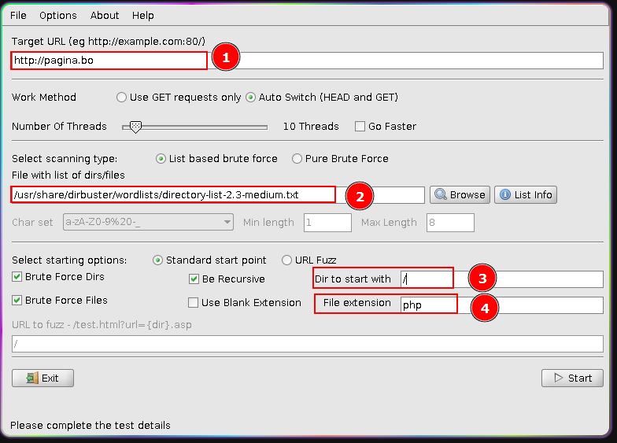
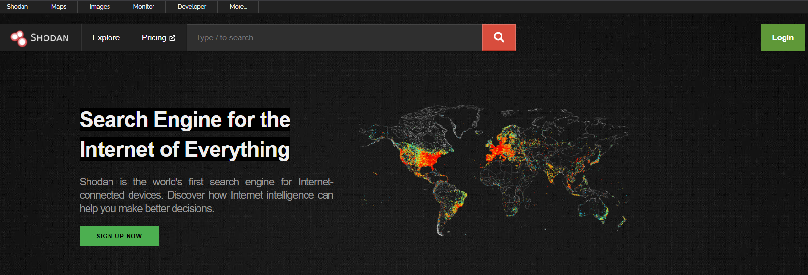
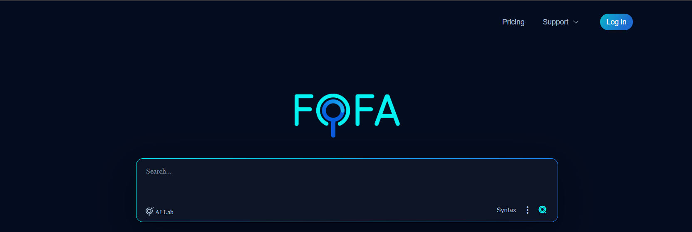

FingerPrinting
Reconocimiento Activo
Juan Alberto Fajardo Canaza
1 Pre-engagement
- Autorización expresa:
(MAE) - Universidad Católica Boliviana (UCB) - Alcance (Scope):
Dominios y subdominiosde de*.ucb.edu.bo - Activos permitidos:
Servidores expuestos internet - Activos excluidos:
Servidores Windows - Ventana de ejecución:
Fuera de horario laboral - Reglas de compromiso (RoE):
Avisar inmediata por una vulnerabilidad Crítica o explotable. - Contacto de emergencia:
Celular/WhatsApp: 73854298
- 1. Introducción al hacking ético
- 2. Footprinting y reconocimiento
- 3. Escaneo de redes
- 4. Enumeración (Ingeniería social)
- 5. Análisis de vulnerabilidades
- 6. Hacking de sistemas
2. Continuando el Proceso de Escaneo
FingerPrinting Técnica para determinar el sistema operativo, servicios y versiones de un objetivo mediante el análisis de su "huella digital" en la red.- 1. Informacion Metadata
- 2. Sistema Opertivo
- 3. Puertos, servicios, versiones
- 4. Tecnologías de Aplicación
2.1 Protocolos, Puertos, Servicios
Protocolo
Reglas de comunicación entre sistemas
Puertos
Son puntos virtuales para gestionar el tráfico de red a aplicaciones.
0 - 1,023: Puertos Bien Conocidos (Well-Known Ports)
1,024 - 49,151: Puertos Registrados (Registered Ports)
49,152 - 65,535: Puertos Dinámicos o Privados (Dynamic/Ephemeral Ports)
Servicios
services.msc | Get-Service
systemctl list-units --type=service
services.msc | Get-Service
systemctl list-units --type=service
3.1 Fingerprinting
Informacion (Google Hacking)
site:ucb.edu.bo filetype:doc|pdf|xlsx|
site:ucb.edu.bo inurl:Juan Fajardo
site:ucb.edu.bo inbody:"fajardo@ucb.edu.bo"
site:ucb.edu.bo inurl:Juan Fajardo
site:ucb.edu.bo inbody:"fajardo@ucb.edu.bo"
3.1 Fingerprinting
Informacion Metadata
sudo apt update
sudo apt search exiftool
sudo apt install exiftool
exiftool archivo.pdf
sudo apt search exiftool
sudo apt install exiftool
exiftool archivo.pdf
3.1 Fingerprinting
Informacion Metadata (dirbuster)
/usr/share/dirbuster/wordlists/
/usr/share/dirbuster/wordlists/


3.2 Fingerprinting (ping)
Recolección de Sistema Opertivo
ping 192.168.100.1
Respuesta desde 192.168.100.1: bytes=32 tiempo=3ms TTL=64
Respuesta desde 192.168.100.1: bytes=32 tiempo=4ms TTL=64
ping 192.168.1.15
Respuesta desde 192.168.1.15: bytes=32 tiempo=1m TTL=128
Respuesta desde 192.168.1.15: bytes=32 tiempo=1m TTL=128
3.3 Fingerprinting (telnet)
Recolección de puertos, servicios, versiones
telnet 192.168.100.1 80
telnet 192.168.100.1 22
telnet 192.168.100.1 21
3.3 Fingerprinting (nmap)
Recolección de puertos, servicios, versiones
nmap scanme.nmap.com
nmap insecure.org
zonetransfer.me
nmap help
nmap -p 80 IP
nmap -sS IP
nmap -sV IP
nmap -T4 IP
nmap -sS -sV -p 80 -T4 IP
nmap -sn IP/CIDR
3.3 Fingerprinting (ASN nmap)
Un ASN (Autonomous System Number o Número de Sistema Autónomo) es un identificador numérico único asignado globalmente a un grupo de redes IP gestionadas por una sola organización (ISP, empresa o institución).
https://ipinfo.io/countries/bo
nmap -sn IP/CIDR
3.4 FootPrinting (Suizo/EEUU)
https://www.shodan.io/

3.4 FootPrinting (Chino)
https://en.fofa.info/
